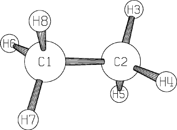

Symmetry data defining related bond lengths, angles and dihedrals, or x, y, and z coordinates, can be included by supplying additional data after the geometry has been entered. If there are any other data, such as values for the reaction coordinates, or a second geometry, as required by SADDLE, then it would follow the symmetry data. Symmetry data are terminated by one blank line. For non-variationally optimized systems symmetry constraints can save a lot of time because many derivatives do not need to be calculated. At the same time, there is a risk that the geometry may be wrongly specified, e.g. if methane radical cation is defined as being tetrahedral, no indication that this is faulty will be given until a FORCE calculation is run. (This system undergoes spontaneous Jahn-Teller distortion.)
Usually a lower heat of formation can be obtained when SYMMETRY is specified. To see why, consider the geometry of benzene. If no assumptions are made regarding the geometry, then all the C-C bond lengths will be very slightly different, and the angles will be almost, but not quite 120 degrees. Fixing all angles at 120 degrees, dihedrals at 180 or 0 degrees, and only optimizing one C-C and one C-H bond-length will result in a 2-D optimization, and exact D6h symmetry. Any deformation from this symmetry must involve error, so by imposing symmetry some error is removed.
SYMMETRY does not involve any point-group symmetry or symmetry theory. When SYMMETRY is used, the symmetry relations between coordinates are defined by the user. These can be used for defining the point-group of a molecule, for example the D6h of benzene, but no point-group theory is used when SYMMETRY is specified.
By default, symmetry point-groups are automatically assigned, and used in identifying the irreducible representations of molecular orbitals, vibrations, and states, and in accelerating the construction of the Hessian in FORCE calculations. To disable this function, use NOSYM.
The layout of the symmetry data is:
<defining atom> <symmetry relation> <defined atom> <defined atom>,...
where the numerical codes for <symmetry relation> are given in
the tables of symmetry functions below.
For function 19 in internal coordinates, the format of the symmetry data is
<defining atom> 19 <multiplying factor> <defined atom> <defined atom>,...
For example, ethane, with three independent internal coordinate variables, can be defined as shown in Figure 1. Here atom 3, a hydrogen, is used to define the bond lengths (symmetry relation 1) of atoms 4,5,6,7 and 8 with the atoms they are specified to bond with in the NA column of the data file; similarly, its angle (symmetry relation 2) is used to define the bond-angle of atoms 4,5,6,7 and 8 with the two atoms specified in the NA and NB columns of the data file. The other angles are point-group symmetry defined as a multiple of 60 degrees.
Spaces, tabs or commas can be used to separate data. Note that only three parameters are marked to be optimized. The symmetry data can be the last line of the data file unless more data follows, in which case a blank line must be inserted after the symmetry data.
Internal coordinate symmetry function 19 is intended for use in infinite systems, in which the translation vector may be a simple function of some bond-length. The format for symmetry function 19 is as follows:
n1 19 multiplier n2 {n3 {n4 ...}}
where n1 is the reference atom, as usual, n2, n3,, n4, etc., are the dependent atoms, and multiplier is the value that the reference bond-length is to be multiplied by. Because high precision is often needed in solid-state symmetry, if multiplier is within 10-4 of a commonly-used ratio, then it will be adjusted to that ratio. This means that multiplier need only be defined to five decimal places. For example, if multiplier were to be 8.55375, then this would be recognized as (439/6)½ and immediately re-defined as 8.5537516136.
Abbreviation: SYM.
Methane, specified using Cartesian coordinates, can be described with one unknown, the C-H bond length, as shown in Figure 2.
Internal Coordinate Symmetry Functions
| 1 | Bond length is set equal to the reference bond length | |
| 2 | Bond angle is set equal to the reference bond angle | |
| 3 | Dihedral angle is set equal to the reference dihedral angle | |
| 4 | Dihedral angle varies as 90o - reference dihedral | |
| 5 | Dihedral angle varies as 90o + reference dihedral | |
| 6 | Dihedral angle varies as 120o - reference dihedral | |
| 7 | Dihedral angle varies as 120o + reference dihedral | |
| 8 | Dihedral angle varies as 180o - reference dihedral | |
| 9 | Dihedral angle varies as 180o + reference dihedral | |
| 10 | Dihedral angle varies as 240o - reference dihedral | |
| 11 | Dihedral angle varies as 240o + reference dihedral | |
| 12 | Dihedral angle varies as 270o - reference dihedral | |
| 13 | Dihedral angle varies as 270o + reference dihedral | |
| 14 | Dihedral angle varies as the negative of the reference dihedral | |
| 15 | Bond length varies as half the reference bond length | |
| 16 | Bond angle varies as half the reference bond angle | |
| 17 | Bond angle varies as 180o -reference bond angle | |
| 18 | (not used) | |
| 19 | Bond length is a multiple of the reference bond length |
Figure 1:
Ethane, showing use of SYMMETRY|
 SYMMETRY ETHANE, D3D NA NB NC C C 1.53 1 1 H 1.10 1 110 1 2 1 H 1.10 0 110 0 120 0 2 1 3 H 1.10 0 110 0 240 0 2 1 3 H 1.10 0 110 0 60 0 1 2 3 H 1.10 0 110 0 180 0 1 2 3 H 1.10 0 110 0 300 0 1 2 3 0 0.00 0 0 0 0 0 0 0 0 3, 1, 4, 5, 6, 7, 8, 3, 2, 4, 5, 6, 7, 8, |
Table 2:
Cartesian Coordinate Symmetry Functions| 1 | X coordinate is set equal to the reference X coordinate | |
| 2 | Y coordinate is set equal to the reference Y coordinate | |
| 3 | Z coordinate is set equal to the reference Z coordinate | |
| 4 | X coordinate is set equal to - the reference X coordinate | |
| 5 | Y coordinate is set equal to - the reference Y coordinate | |
| 6 | Z coordinate is set equal to - the reference Z coordinate | |
| 7 | X coordinate is set equal to the reference Y coordinate | |
| 8 | Y coordinate is set equal to the reference Z coordinate | |
| 9 | Z coordinate is set equal to the reference X coordinate | |
| 10 | X coordinate is set equal to - the reference Y coordinate | |
| 11 | Y coordinate is set equal to - the reference Z coordinate | |
| 12 | Z coordinate is set equal to - the reference X coordinate | |
| 13 | X coordinate is set equal to the reference Z coordinate | |
| 14 | Y coordinate is set equal to the reference X coordinate | |
| 15 | Z coordinate is set equal to the reference Y coordinate | |
| 16 | X coordinate is set equal to - the reference Z coordinate | |
| 17 | Y coordinate is set equal to - the reference X coordinate | |
| 18 | Z coordinate is set equal to - the reference Y coordinate |
Figure 2:
Example of Cartesian SYMMETRY functions
XYZ SYMMETRY Methane, Td C 0.0000000 0 0.0000000 0 0.0000000 0 H 0.6375302 1 0.6375302 0 0.6375302 0 H 0.6375302 0 -0.6375302 0 -0.6375302 0 H -0.6375302 0 0.6375302 0 -0.6375302 0 H -0.6375302 0 -0.6375302 0 0.6375302 0 2 1 3 2 4 4 5 2 9 2 5 2 12 3 4 2 14 2 4 2 17 3 5 |